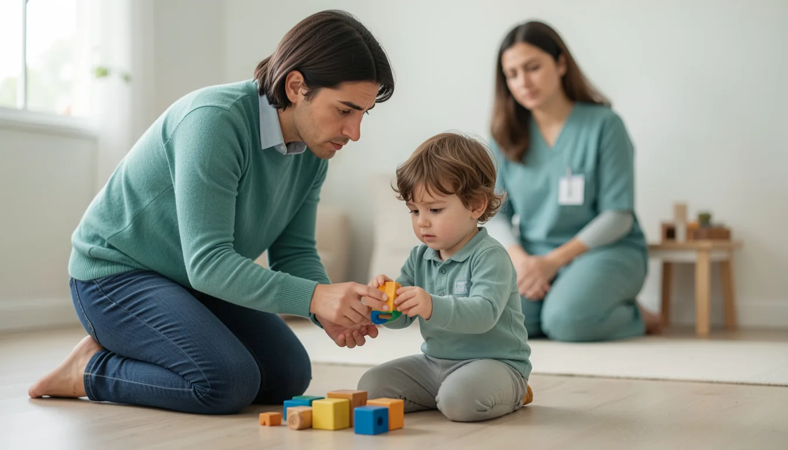
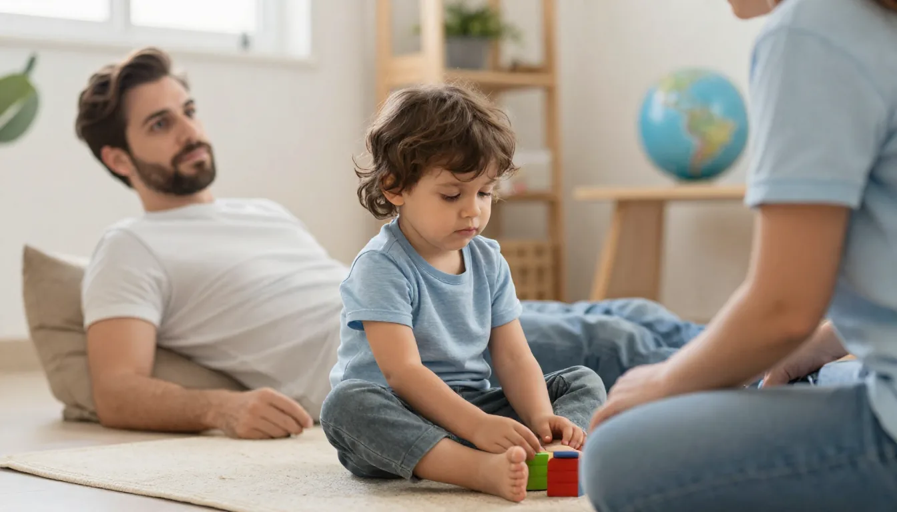
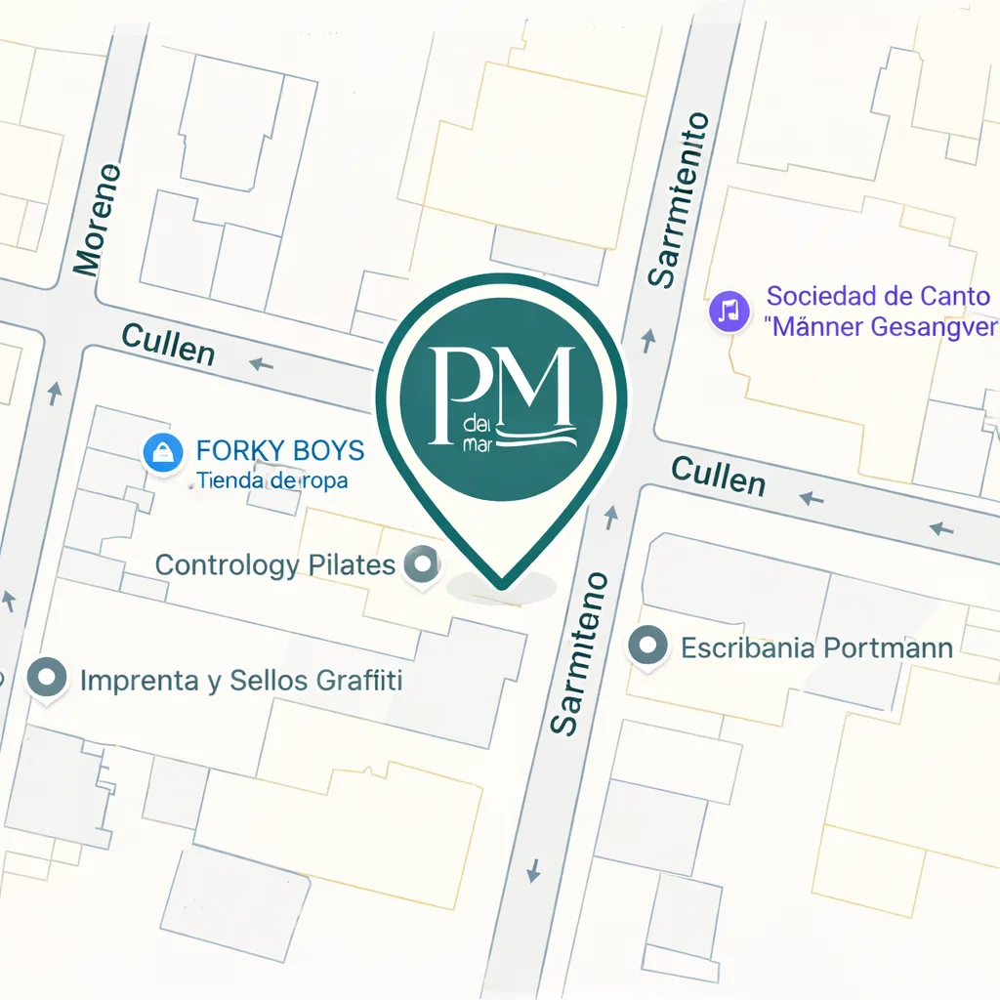

Piel de Mar — Estimulación Temprana y Acompañamiento Familiar en Esperanza, Santa Fe
Piel de Mar - Acompañamiento profesional



tu hij@ y vos
Cada familia tiene su propio ritmo. El acompañamiento busca comprender las necesidades del niño y ofrecer herramientas realistas para la vida cotidiana, sin juicios ni recetas únicas.
- Miramos al niño en su totalidad, no solo sus dificultades
- Trabajamos desde el respeto, sin forzar procesos ni etiquetas
- Creamos un espacio donde podés hablar sin sentirte juzgada
- Te damos orientaciones claras que podés aplicar hoy mismo
Momentos de conexión
Rituales simples para fortalecer el vínculo con tu hijo cada día
Bienestar familiar
Estrategias para cultivar la calma y el equilibrio en casa
Te acompañamos en cada etapa
Estimulación temprana
Actividades personalizadas para potenciar el desarrollo integral de tu hijo según su edad y necesidades.
Acompañamiento emocional
Herramientas para que tu hijo aprenda a identificar y gestionar sus emociones de forma saludable.
Neurodesarrollo infantil
Detección temprana de señales de alerta e intervención oportuna para optimizar su desarrollo.
Acompañamiento familiar
Orientación para madres y padres que buscan una crianza consciente, respetuosa y conectada.
Recursos gratuitos para acompañar el desarrollo

Solicitá un turno
Presencial en Esperanza o virtual. Preparamos el mensaje y lo enviás por WhatsApp; el turno queda sujeto a confirmación de Piel de Mar.
El turno debe ser confirmado por Piel de Mar después de recibir y revisar tu mensaje.
¿No se abrió WhatsApp? Usá una de estas opciones. Los datos no se guardan en este sitio.
Abrir WhatsAppHablemos

Escribinos por WhatsApp, la forma más rápida
+54 9 3425 004018
Cullen 1619, Esperanza, Santa Fe.
Ver indicaciones
Lunes a viernes
8:00 a 12:00 y 16:00 a 20:00 hs